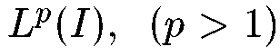

|
|
|
|
|
|
|
|
Конференции за рубежом:
| ICINCO 2012 | |
| 9th International Conference on Informatics in Control, Automation and Robotics | |
| Rome, Italy, July 28-31, 2012. |
| MED 2012 | |
| 20th Mediterranean Conference on Control and Automation | |
| Barcelona, Spain, July 3-6, 2012. |
| OCDGND 2012 | |
| 12th Viennese Workshop on Optimal Control, Dynamic Games and Nonlinear Dynamics | |
| Vienna, Austria, May 30 - June 2, 2012. |
Конференции в России:
| МКИНС2012 | |
| XIX Санкт-Петербургская международная конференция по интегрированным навигационным системам | |
| Санкт-Петербург, Россия, 28 - 30 мая 2012 г. |
| КМУ 2012 | |
| XIV конференция молодых ученых "Навигация и управление движением" | |
| Санкт-Петербург, Россия, 13 - 16 марта 2012 г. |
Книжная полка:
| С.Н. Дашковский, Д.В. Ефимов, Э.Д. Cонтаг (AиТ, 2011, N8, стр. 3-40) | |
| Устойчивость от входа к состоянию и смежные свойства систем | |
| PDF, 409 KB |
Конференции в России:
| STAB' 12 | |
| XII международная конференция "Устойчивость и колебания нелинейных систем управления" (конференция Пятницкого) | |
| ИПУ РАН, Москва, 5-8 июня 2012 г. |
Информационные сайты по науке и технике:
 Научно-производственное предприятие
"Центральная лаборатория автоматизации измерений"
Научно-производственное предприятие
"Центральная лаборатория автоматизации измерений"
Конференции за рубежом:
| ECC13 | |
| European Control Conference | |
| Zurich, Switzerland, July 17-19, 2013. |
| ICARCV 2012 | |
| 12th International Conference on Control, Automation, Robotics and Vision | |
| Guangzhou, China, December 5-7, 2012. |
| ATACCS'2012 | |
| 2nd International Conference on Application and Theory of Automation in Command and Control Systems | |
| London, UK, May 29-31, 2012. |
| ACODS | |
| Hybrid Systems: Computation and Control | |
| Beijing, China, April 17-19, 2012. |
| SYSCON 2012 | |
| IEEE Systems Conference | |
| Vancouver, British Columbia, Canada, March 19-23, 2012. |
| ACODS | |
| Advances in Control and Optimization of Dynamical Systems | |
| Bangalore, India, February 16-18, 2012. |
Конференции за рубежом:
| ADHS 2012 | |
| 4th IFAC Conference on Analysis and Design of Hybrid Systems | |
| Eindhoven, The Netherlands, June 6-8, 2012. |
Конференции за рубежом:
IFAC CHAOS 12 Third IFAC meeting related to analysis and control of chaotic Systems Cancun, Mexico, June 20-22, 2012.
Конференции в России:
УБС'2011 Международная научно-практическая Мультиконференция "Управление большими системами" Институт проблем управления им. В.А. Трапезникова РАН, Москва, 14-16 ноября 2011 г.
УКИ-12 3-я Российская конференция с международным участием "Технические и программные средства систем управления, контроля и измерения" Институт проблем управления им. В.А. Трапезникова РАН, Москва, 16-19 апреля 2012 г.
Конференции в России:
DIST 2011 Distributed Intelligent Systems and Technologies Workshop Санкт-Петербург, 28-30 сентября, 2011 г.
Конференции за рубежом:
МИССУ 2011 XIV Международная научно-техническая конференция МОДЕЛИРОВАНИЕ, ИДЕНТИФИКАЦИЯ, СИНТЕЗ СИСТЕМ УПРАВЛЕНИЯ пос. Канака, Алуштинский район, АР Крым, Украина, 11-18 сентября 2011 г.
Конференции в России:
BOAC'2011 Четырнадцатая международная студенческая олимпиаде по автоматическому управлению (Балтийская олимпиада) Санкт-Петербург, 21-23 сентября 2011 г..
Конференции в России:
ACE 2012 9th IFAC Symposium Advances in Control Education Нижний Новгород, 19-21 июня, 2012 г.
Конференции за рубежом:
DSMSI-2011 Международная конференция "Моделирование и исследование устойчивости динамических систем" Киев, Украина, 25-27 Мая 2011 г.
Конференции в России:
МКПУ-2011 4-ая Всероссийская мультиконференция по проблемам управления с. Дивноморское Геленджикского района, Краснодарский край, Россия, 3 - 8 октября 2011 г.
Конференции за рубежом:
Allerton 2011 49th Annual Allerton Conference on Communication, Control, and Computing Allerton House, University of Illinois, USA, September 28-30, 2011.
Конференции за рубежом:
ICSCD 11 Одиннадцатая международная конференция "Устойчивость, управление и динамика твердого тела" Донецк, Украина, 8-12 июня 2011 г.
Конференции в России:
SICPRO '12 IX Международная конференция "Идентификация систем и задачи управления" ИПУ РАН, Москва, 30 января - 2 февраля 2012 г.
Конференции в России:
DEGIT-XVI XVI международная конференция по динамике, экономическому росту и международной торговле Санкт-Петербург, 8-9 сентября 2011 г.
УПРАВЛЕНИЕ, ИНФОРМАЦИЯ И ОПТИМИЗАЦИЯ ТРЕТЬЯ ТРАДИЦИОННАЯ ВСЕРОССИЙСКАЯ МОЛОДЕЖНАЯ ЛЕТНЯЯ ШКОЛА пос. Ярополец, 12-19 июня 2011 г.
Конференции за рубежом:
Robot intellect - 2011 The competition "Robot intellect - 2011" Kaunas, Lithuania, May 4-5, 2011.
TAAC Международная научная конференция студентов, аспирантов и молодых ученых "Теоретические и прикладные аспекты кибернетики" Киев, Украина, 21-25 февраля 2011 г.
Конференции за рубежом:
DSCC 2011 The 4th Annual Dynamic Systems and Control conference Arlington, VA, USA, October 31 - November 2, 2011.
MSC 2011 2011 IEEE Multi-Conference on Systems and Control Denver, USA, September 28-30, 2011.
COIA2011 3rd International Conference on Control and Optimization With Industrial Applications Ankara, Turkey, August 22-24, 2011.
ICINCO 2011 8th International Conference on Informatics in Control, Automation and Robotics Noordwijkerhout, The Netherlands, July 28-31, 2011.
MED'11 The 19th Mediterranean Conference on Control and Automation Corfu Island, Greece, June 20-23, 2011.
NDES 2011 19th IEEE Workshop on Nonlinear Dynamics of Electronic Systems Indian Institute of Chemical Biology, Kolkata, India, March 9-11, 2011.
Специальный выпуск журнала "Mathematics of Control, Signals, and Systems."
на тему "Робастная устойчивость и управление крупномасштабными нелинейными системами".
Приглашение к подаче рукописей
Конференции за рубежом:
Physcon 2011 5th International Scientific Conference on Physics and Control Leon, Spain, September 5-8, 2011.
InECCE 2011 1st International Conference on Electrical, Control and Computer Engineering Kuantan, Pahang, Malaysia, June 21-22, 2011.
Конференции за рубежом:
CDCECC2011 50th IEEE Conference on Decision and Control and European Control Conference Orlando, Florida, USA, December 12-15, 2011.
CT11 SIAM Conference on Control and Its Applications Baltimore, Maryland, USA, July 25-27, 2011.
Конференции в России:
МКИНС2011 XVIII Санкт-Петербургская международная конференция по интегрированным навигационным системам Санкт-Петербург, Россия, 30 мая - 1 июня 2011 г.
КМУ 2011 XIII конференция молодых ученых "Навигация и управление движением Санкт-Петербург, Россия, 15-17 марта 2011 г.
Конференции в России:
МКПУ-2010 3-я мультиконференция по проблемам управления:
- XXVII конференция памяти Н.Н.Острякова
- "Управление в технических системах" (УТС-2010)
- 7-я научно-техническая конференция "Мехатроника, автоматизация, управление" (МАУ-2010)
- 6-я научная конференция "Управление и информационные технологии" (УИТ-2010)
- Научно-технический семинар "Управление в распределенных сетецентрических и мультиагентных системах"
Санкт-Петербург, 12-14 октября 2010 г..
Конференции за рубежом:
МИССУ'2010 13-я международная конференция "Моделирование, идентификация, синтез систем управления" пос. Канака, Алуштинский район, Крым, Украина, 12-19 сентября 2010 г..
Конференции в России:
13-я Cтуденческая олимпиада по автоматическому управлению Санкт-Петербург, 26-28 мая 2010 г.
Конференции в России:
ЭКСТРЕМАЛЬНАЯ РОБОТОТЕХНИКА Международная научно-техническая конференция посвященная 20-летию МЧС России Москва, 18 - 21 мая 2010 года.
РОБОТОТЕХНИКА. ВЗГЛЯД В БУДУЩЕЕ Международный научно-технический семинар Санкт-Петербург, 10,11 марта 2010 года.
Электронный журнал РУСИКОН:
Фуртат И.Б. (Астраханский государственный технический университет, Россия) Децентрализованное субоптимальное управление по быстродействию многосвязными объектами В работе рассмотрено децентрализованное робастное субоптимальное управление параметрически и функционально неопределенным многосвязным объектом. Предполагается, что доступны измерению только скалярные выходы локальных подсистем, каждые из которых используются только в своих подсистемах. Цель управления состоит в переводе объекта из начального положения в конечное за минимальное время с заданной точностью. Полный текст (PDF, 288 Kb)
Конференции за рубежом:
NecSyS'10 2nd IFAC* Workshop on Distributed Estimation and Control in Networked Systems Annecy, France, September 13-14, 2010.
Конференции в России:
УБС - 2010 VII Всероссийская школа-конференция молодых ученых "УПРАВЛЕНИЕ БОЛЬШИМИ СИСТЕМАМИ" Пермь, 27-29 мая 2010 г.
Российские журналы:
"Проблемы управления" - печатное издание
Конференции в России:
SIBIRCON 2010 IEEE Region 8 2nd International Conference "Computational Technologies in Electrical and Electronics Engineering" Irkutsk, Russia, July 11-15, 2010.
Конференции за рубежом:
IBCE'10 3rd International IFAC Workshop on Internet-based Control Education Orlando, Florida, USA, June 27-29, 2010.
Конференции в России:
УПРАВЛЕНИЕ, ИНФОРМАЦИЯ И ОПТИМИЗАЦИЯ ВТОРАЯ ТРАДИЦИОННАЯ ВСЕРОССИЙСКАЯ МОЛОДЕЖНАЯ ЛЕТНЯЯ ШКОЛА
Суздаль, 20-28 июня 2009 г.
Конференции за рубежом:
IWSSIP 2010 The 17th International Conference on Systems, Signals and Image Processing Rio de Janeiro, Brazil, June 17-19, 2010.
Конференции за рубежом:
ICARCV 2010 International Conference on Control, Automation, Robotics and Vision Singapore, December 7-10, 2010.
IEEE WCCI 2010 2010 IEEE World Congress on Computational Intelligence Barcelona, Spain, July 18-23, 2010.
BICS 2010 Brain Inspired Cognitive Systems Madrid, Spain, July 14-16, 2010.
Конференции в России:
ПТА 2010 III Специализированная Конференция "ПТА. Интеллектуальное здание - 2010" Санкт-Петербург, 18 ноября 2010 года.
Конференции за рубежом:
ALCOSP 2010 10th IFAC Workshop "Adaptation and Learning in Control and Signal Processing" Antalya, Turkey, August 26-28, 2010.
PSYCO 2010 4th IFAC Workshop "Periodic Control Systems" Antalya, Turkey, August 26-28, 2010.
Конференции в России:
SCP 2010 Конференция "Устойчивость и процессы управления", посвящена 80-летию со дня рождения В. И. Зубова Факултьет ПМ-ПУ СПбГУ, Санкт-Петербург, 1 - 2 июля, 2010 г.
Конференции за рубежом:
ICCPS-2010 ACM/IEEE First International Conference on Cyber-Physical Systems Stockholm, Sweden, April 13-14, 2010 .
CPSWEEK-2010 The Cyber-Physical Systems Week Stockholm, Sweden, April 12-16, 2010 .
Конференции за рубежом:
VCC' 10 The 1st Virtual Control Conference September 21-23, 2010.
Конференции в России:
STAB' 10 XI международная конференция "Устойчивость и колебания нелинейных систем управления" (конференция Пятницкого) ИПУ РАН, Москва, 1 - 4 июня 2010 г..
Конференции за рубежом:
WMSCI 2010 The 14th World Multi-Conference on Systemics, Cybernetics and Informatics Orlando, Florida, USA, June 29 - July 2, 2010.
Конференции за рубежом:
ISCAS 2010 2010 IEEE International Symposium on Circuits and Systems, "Nano-Bio Circuit Fabrics and Systems" Paris, France, May 30 - June 2, 2010.
Конференции за рубежом:
MSC 2010 The 2010 IEEE Multi-Conference on Systems and Control Yokohama, Japan, September 8-10, 2010.
Конференции за рубежом:
ICCA 10 The 8th IEEE International Conference on Control & Automation Xiamen, China, June 9-11, 2010.
Конференции в России:
ICINS 2010 XVII Санкт-Петербургская международная конференция по интегрированным навигационным системам Санкт-Петербург, 31 мая - 2 июня 2010 г.
КМУ 2010 XII конференция молодых ученых "Навигация и управление движением" Санкт-Петербург, 16-18 марта 2010 г.
Конференции за рубежом:
MTNS 2010 19th International Symposium on Mathematical Theory of Networks and Systems ELTE and MTA SZTAKI, Budapest, Hungary, July 5-9, 2010.
Книжная полка:
Электронная библиотека УГАТУ Cодержит много классических и современных книг, методических материалов по теории управления (для скачивания требуется регистрация)
Конференции за рубежом:
MELECON 2010 15th IEEE Mediterranean Electrotechnical Conference IEEE Malta Section, University of Malta, Valletta, Malta, April 26-28, 2010.
Конференции за рубежом:
RA 2009 IASTED conference on Robotics and Applications (RA 2009) Cambridge, Massachusetts, USA, November 4 - 6, 2009.
Конференции в России:
ИКТМР-2009 Актуальные проблемы информационно-компьютерных технологий, с. Дивноморское Геленджикского района, Краснодарский край, Россия, 28 сентября - 03 октября 2009 г.
Книжная полка:
Искусственный интеллект и творчество Рея Курцвейла Р. Курцвейл - выдающийся изобретатель, создатель первых сканеров, синтезаторов речи, систем распознавания текстов и образов, цифровых музыкальных инструментов. В последние годы занимается футурологией, развивая идею сингулярности: всеобщего человеко-машинного распределенного интеллекта
Cайт Р.Курцвейла: www.kurzweilai.net
Книжная полка:
Редько В.Г. Перспективы исследований на стыке информатики и биологии //Нейроинформатика
Арский Ю.М., Финн В.К. Принципы конструирования интеллектуальных систем //Информационные технологии и вычислительные системы
Карпов В.Э. К вопросу об управлении мобильным роботом в условиях общей постановки задачи //Вестник компьютерных и информационных технологий
Городецкий В.И.,Грушинский М.С.,Хабалов А.В. Многоагентные системы (обзор) //Новости искусственного интеллекта
Книжная полка:
Библиотека Российской ассоциации искусственного интеллекта. Статьи, книги, материалы
A.Zenkin Super-Induction Method: Logical Acupuncture of Mathematical Infinity
Аверкин А.Н., Гаазе-Рапопорт М.Г., Поспелов Д.А. "Толковый словарь по искусственному интеллекту , М.: Радио и связь, 1992, 256с.
Конференции за рубежом:
CQIQC Conference on Quantum Information & Quantum Control the Fields Institute, Toronto, Canada, August 24-27, 2009.
Конференции за рубежом:
ROSNS Workshop on Resonance Oscillations and Stability of NonsmoothSystems Imperial College London, United Kingdom, 16 June - 25 June, 2009.
Конференции в России:
DIST2009 Workshop Distributed Intelligent Systems and Technologies St. Petersburg State Polytechnic University, St. Petersburg, Russia, June 8-10, 2009.
Конференции за рубежом:
Nonlinear 09 Нелинейный анализ и приложения.
Конференция памяти члена-корреспондента НАН Украины Валерия Сергеевича МельникаКиев, Украина, 2-4 апреля, 2009 .
Конференции в России:
ПТА, Интеллектуальное здание Санкт-Петербург 2009 II Специализированная Конференция "ПТА. Интеллектуальное здание - 2009" Санкт-Петербург, 18 февраля 2009 г.
Конференции за рубежом:
ECT-2009 The 4th International Conference on Electrical and Control Technologies Kaunas, Lithuania, 7-8 May, 2009.
CHAOS'09 2nd IFAC Conference on Analysis and Control of Chaotic Systems Queen Mary, University of London, UK, 22-24 June, 2009.
CDC 2009 Combined 48th IEEE Conference on Decision and Control and 28th Chinese Control Conference Shanghai, China , December 16-18, 2009.
NOLCOS 2010 8th IFAC Symposium on Nonlinear Control Systems University of Bologna, Italy, September 01-03, 2010.
Конференции за рубежом:
MSNDC (IDECT2009) 7th International Conference on Multibody Systems, Nonlinear Dynamics, and Control
San Diego, USA, August 30 - September 2, 2009.
Конференции в России:
PWS 6-ой Санкт-Петербургский международный семинар по моделированию
СПбГУ, Санкт-Петербург, 28 июня - 4июля 2009 г.
1 декабря 2008 года состоялся очередной Санкт-Петербургский городской семинар "Теория управления". В докладе А.Л. Фрадкова "Романтика кибернетики", посвященному 60-летию выхода книги Н. Винера "Кибернетика, или управление и связь в животном и машине", обсуждались, в частности, следующие темы:
Конференции в России:
УПРАВЛЕНИЕ, ИНФОРМАЦИЯ И ОПТИМИЗАЦИЯ ПЕРВАЯ ТРАДИЦИОННАЯ ВСЕРОССИЙСКАЯ МОЛОДЕЖНАЯ ЛЕТНЯЯ ШКОЛА
Переславль-Залесский, 21-28 июня 2009 г.
Конференции за рубежом:
IFAC 2011 18-й Всемирный конгресс ИФАК по автоматическому управлению (ИФАК 2011)
Milan, Italy, August 28 - September 2, 2011.
PHYSCON 2009 4th International Scientific Conference on Physics and Control Catania, Italy, September 1-4, 2009.
ECC'09 European Control Conference Budapest, Hungary, August 23-26, 2009.
Конференции в России:
ПТА Санкт-Петербург 2009 Международная выставка оборудования и технологий для АСУТП и встраиваемых систем "ПТА Санкт-Петербург 2009"
Санкт-Петербург, 24-26 июня 2009 г.
МКИНС 2009 XVI Санкт-Петербургская международная конференция по интегрированным навигационным системам
Санкт-Петербург, 25-27 мая 2009 г.
Мультиконференция "Теория и системы управления" Москва, ИПУ, 26-30 января 2009 г.
Конференции в России:
MSC 2009 3rd IEEE Multi-conference on Systems and Control
Saint Petersburg, July 8-10, 2009.
AGNFCS 09 Workshop Aerospace Guidance, Navigation and Flight Control Systems
Samara, June 30 - July 2, 2009.
INCOM 09 13th IFAC Symposium on Information Control Problems in Manufacturing
Moscow, June 3-5, 2009.
6-11 июля в Сеуле, Корея, проходил XVII Всемирный Конгресс ИФАК (IFAC) по Автоматическому управлению.
Конгресс привлек рекордное количество участников - почти 3000 человек. 2716 статей были представлены на 423 заседаний, в том числе -- 288 статей из Китая, 265 статей из Франции, 217 -- из Кореи, 211 -- из Японии, 194 -- из США,... 70 статей из России. Российская делегация имела рекордное количество участников - 106 человек.
Следующий, 18й Всемирный конгресс ИФАК состоится в 2011 году в Милане, Италия.
Перед церемонией закрытия Конгресса, 14 выдающихся ученых получили звание Почетного члена ИФАК, в том числе и Председатель Российского национального комитета по автоматическому управлению - академик РАН, профессор Александр Борисович Куржанский. Поздравляем!
Академики и члены-корреспонденты РАН по специальностям, связанным с системами и управлением
Конференции в России:
EUROCON 2009 Международная конференция посвященная 150-летию А.С. Попова
Санкт-Петербург, 18-23 мая 2009 г.
Российские коллективы:
Кафедра Прикладной кибернетики С.-Петербургский государственный университет
Кафедра Распределенныx Интеллектуальныx Систем С.-Петербургский государственный политехнический университет
Российские журналы:
"Автоматизация в промышленности"
Конференции в России:
Четвертая Международная конференция "Параллельные вычисления и задачи управления" PACO '2008 Москва, 27-29 октября 2008 г.
XXVI Конференция памяти Н.Н. Острякова Санкт-Петербург, 14-16 октября 2008 г.
2-я Российская мультиконференция по проблемам управления (РМКПУ-2008) Санкт-Петербург, 14-16 октября 2008 г.
Выставка и конференция по АСУ ТП и встраиваемым системам в Москве "ПТА" Москва, 1-3 октября 2008 г.
VIII Международная конференция и выставка CAD/CAM/PDM - 2007. Москва, октябрь 2008 г.
"Моделирование, идентификация, синтез систем управления '2008" Крым, Украина, 14-21 сентября 2008 г.
4ECSC 4-ая Европейская конференция по управлению конструкциями Санкт-Петербург, Россия, 8-12 сентября, 2008.
ENOC'08 6th Euromech Nonlinear Dynamics Conference Saint-Petersburg, June 30 - July 4, 2008.
Stab'08 X Международный семинар "Устойчивость и колебания нелинейных систем управления" имени Е.C. Пятницкого Москва, Россия, 3-6 июня, 2008 г.
Международный научный семинар "70 лет теории инвариантности". Москва, 2 июня, 2008 г.
ICINS'08 XV Санкт-Петербургская международная конференция по интегрированным навигационным системам Санкт-Петербург, Россия, 26-28 мая 2008 г.
Программно-технические комплексы, промышленные контроллеры, технические и программные средства для АСУ ТП, SCADA-системы, приборы и средства автоматизации. Москва, Россия, 15-18 апреля, 2008.
Российские журналы:
"Управление большими системами" (электронное издание)
Конференции в России:
Выставка и конференция по АСУ ТП и встраиваемым системам в Москве "ПТА" Москва, 1-3 октября 2008 г.
Выставка и конференция по АСУ ТП и встраиваемым системам в Санкт-Петербурге "ПТА" Санкт-Петербург, 14-16 мая 2008 г.
III-я Всероссийская молодежная научная конференция по проблемам управления (МКПУ-2008) Москва, 7-9 апреля 2008 г.
7 декабря 2007 - обновлены разделы
Книжная полка:
А.Тьюринг. (1950) Может ли машина мыслить?
А.М.Яглом, И.М.Яглом. (1973) Вероятность и информация.
И.М.Яглом. (1990) Современная культура и компьютеры.
Конференции за рубежом:
MCS 2008 IEEE Multi-conference on Systems and Control San Antonio, Texas, USA, September 3-5, 2008.
Международные организации и фонды:
International Physics and Control Society (IPACS)
Конференции в России:
4ECSC 4-ая Европейская конференция по управлению конструкциями Санкт-Петербург, Россия, 8-12 сентября, 2008.
Конференция и выставка "Цифровая обработка сигналов и ее применение" (DSPA2008) Москва, 26-28 марта 2008 г.
Программно-технические комплексы, промышленные контроллеры, технические и программные средства для АСУ ТП, SCADA-системы, приборы и средства автоматизации. Москва, Россия, 15-18 апреля, 2008.
Новые книги на русском языке:
Биркгофф Г. Математика и психология. Пер. с англ. Изд.2, испр. 2008.
Арлазаров В.Л., Емельянов Н.Е. Информационно-аналитические аспекты в задачах управления: Труды института системного анализа Российской академии наук (ИСА РАН). Т.29 2007.
Ляпунов А.М. Избранный труды: работы по теории устойчивости 2007.
Кудрявцев В.Б., Гасанов Э.Э. Теория тестового распознавания М.: Физматлит, 2007.
Конференции в России:
Stab'08 X Международный семинар "Устойчивость и колебания нелинейных систем управления" имени Е.C. Пятницкого Москва, Россия, 3-6 июня, 2008.
Конференции за рубежом:
CDC 2008 IEEE 47th Conference on Decision and Control Cancun, Mexico, December 9-11, 2008.
SMC'08 IEEE International Conference on Systems, Man and Cybernetics Singapore, October 12-15, 2008.
CCDC'08 IEEE Chinese Control and Decision Conference Yantai, Shandong, China, July 2-4, 2008.
HSCC'08 IEEE 11th International Conference on Hybrid Systems: Computation And Control St. Louis, MO, USA, April 22-24, 2008.
SSST'08 IEEE 40th Southeastern Symposium on System Theory New Orleans, LA, USA, March 16-18, 2008.
ISCCSP'08 IEEE 3rd International Symposium on Communications, Control and Signal Processing Malta, March 12-14, 2008.
Базы данных по системам и управлению:
Портал "Системы и средства промышленной автоматизации".
Конференции в России:
X конференция молодых ученых "Навигация и управление движением" (X КМУ) Санкт-Петербург, 11-13 марта 2008 г.
Книжная полка:
A.L. Fradkov. "Introduction to Cybernetical Physics" (Institute of Informatics and Automation of Chech Academy of Sciences (UTIA), Prague, Nov.1, 2006).
A.L. Fradkov. "Control of Complex Systems" (European Commission ICT InfoDays, Brussels, May 23, 2007)
А.Л. Фрадков. Введение в кибернетическую физику (презентация).
В.Н.Фомин, А.Л.Фрадков, В.А.Якубович. Адаптивное управление динамическими объектами. М.: Наука, 1981.
Объявлен конкурс проектов 7-й рамочной программы ЕС по тематическому приоритету "Информационные и коммуникационные технологии" (FP7 ICT Call 2 for proposals) (см. раздел 3.7. - Сетевые и встраиваемые системы управления). Срок подачи заявок - до 9 октября 2007г.
Международные организации и фонды:
7-я рамочная программа ЕС (РП7)
7-я рамочная программа ЕС в области информационно-коммуникационных технологий
Национальная Контактная Точка РФ по НТП ЕС (РП7) в области Информационных и коммуникационных технологий (Information and communication technologies - ICT): Государственный научно-исследовательский институт операционных систем (ГосНИИ ОС)
Российские организации и фонды:
Общество Приборостроения, Систем и Автоматики (ISA)
Конференции в России:
ICINS'08 XV Санкт-Петербургская международная конференция по интегрированным навигационным системам Санкт-Петербург, Россия, 26-28 мая 2008 г.
Конференции за рубежом:
MIC2008 27th IASTED International Conference on,Modelling, Identification and Control Innsbruck, Austria, February 11-13, 2008.
Книжная полка:
Реабилитация кибернетики. Наталия Дубова. (Computerworld #41/1999)
Некоторые статьи из журнала "Control Engineering", русская версия:
Встроенные системы: системы реального времени для новых поколений. Хэнк Хоган
От математики до модели. Ванс Ван-Дорен.
Современные методы автоматического регулирования: самоадаптация и упреждающее управление. Лу Гордон
Управление электродвигателем: приводы переменного тока стали удобнее для пользователя. Франк Дж. Бартос
Удивительный мир нанотехнологии. Джини Катцель
Journal ECRIM Special Theme: EMBEDDED SYSTEMS
Новые книги на русском языке:
Емельянов С.В., Коровин С.К. Нелинейная динамика и управление: Сборник статей. Вып. 5 М.: Физматлит, 2007.
Скотт Э. Нелинейная наука: рождение и развитие когерентных структур. Пер. с англ. И.А. Макарова под.ред. А.Л.Фрадкова. М.: Физматлит, 2007.
Баландин Д.В., Коган М.М. Синтез законов управления на основе линейных матричных неравенств. М.: Физматлит, 2007.
Алексеев В.М., Галеев Э.М., Тихомиров В.М. Сборник задач по оптимизации. Теория. Примеры. Задачи. Уч. пос. М.: Физматлит, 2007.
Конференции за рубежом:
The 2nd IEEE Multi-conference on Systems and Control (MSC) San Antonio, Texas, September 3-5, 2008
RTAS/HSCC/IPSN 2008, Cyber-Physical Systems Week St. Louis, MO USA, April 22-24, 2008
Новые книги на русском языке:
Аалст Вил ван дер, Хей Кейс ван Управление потоками работ: модели, методы и системы. Физматлит, 2007 г.
А. К. Гуц, Ю. В. Фролова Математические методы в социологии ЛКИ, 2007 г.
Конференции за рубежом:
13th International Power Electronics and Motion Control Conference (EPE/PEMC 2008) September 01 - 03, Poznan, Poland, 2008.
IEEE International Conference on Robotics and Automation (ICRA) May 19 - 23, Pasadena, CA, 2008.
IEEE International Symposium on Circuits and Systems (ISCAS) May 18 - 21, Seattle, WA, 2008.
IEEE International Conference on Networking, Sensing and Control (ICNSC) April 06 - 08, Sanya, China, 2008.
10th IEEE International Workshop on Advanced Motion Control (AMC) March 26 - 28, Trento, Italy, 2008.
AACC IFAC Conference, American Control Conference ACC (in cooperation with IFAC) July 12 - 14, Seattle, USA, 2008.
Новые книги на русском языке:
Бир С. Кибернетика и менеджмент. Перевод с английского. М.: КомКнига, 2006. 280 с.
От моделей поведения к искусственному интеллекту. Серия "Науки об искусственном". Редько В.Г. (Ред.), М.: КомКнига, 2006.
Карабутов Н.Н. Адаптивная идентификация систем: информационный синтез. М.: КомКнига, 2006.
Колесников А.А. Синергетические методы управления сложными системами: теория системного синтеза. М.: КомКнига, 2006. 240 с.
Колесников А.А., Веселов Г.Е., Попов А.Н., Кузьменко А.А., Погорелов М.Е., Кондратьев И.В. Синергетические методы управления сложными системами: энергетические системы. М.: КомКнига, 2006. 248 с.
Санкт-Петербургские олимпиады по кибернетике. /Ананьевский М.С., Болтунов Г.И., Зайцев Ю.Е., Матвеев А.С., Фрадков А.Л., Шиегин В.В. / Под редакцией А.Л.Фрадкова, М.С.Ананьевского. СПб.: Наука, 2006. - 384с. ISBN 5-02-025141-0. УДК 007. ББК 22.18 А64.
Протасов И.Д. Теория игр и исследование операций. Изд.2. М.: Гелиос АРВ, 2006. 368 с.
Охтилев М.Ю., Соколов Б.В., Юсупов Р.М. Интеллектуальные технологии мониторинга и управления структурной динамикой сложных технических объектов. 2006.
Цирлин А.М. Математические модели и оптимальные процессы в макросистемах. 2006. 500 с.
Черноусько Ф.Л., Ананьевский И.М., Решмин С.А. Методы управления нелинейными механическими системами. М.: Физматлит, 2006.
Арутюнов А.В., Магарил-Ильяев Г.Г., Тихомиров В.М. Принцип максимума Понтрягина. Доказательство и приложения. М.: Факториал Пресс, 2006.
Оппенгейм А., Шафер Р. Цифровая обработка сигналов. М.: Техносфера, 2006. 856 с.
Андреева Е.А., Цирулева В.М. Вариационное исчисление и методы оптимизации. М.: Высш. шк., 2006. 584 с.
Буков В.Н. Вложение систем. Аналитический подход к анализу и синтезу матричных систем. 2006.
Синицин И.Н. Фильтры Калмана и Пугачева: Учебное пособие М.: Университетская книга, Логос, 2006.
Алексеев В.М., Тихомиров В.М., Фомин С.В. Оптимальное управление.- 2-е изд., перераб. и доп. М.: Физматлит, 2006.
Краснощеков В.И., Крищенко А.П. Нелинейные системы: геометрические методы анализа и синтеза М.: МГТУ им. Баумана, 2006.
Российские журналы:
"Control Engineering" (русская версия).
Выставки:
3-я международная выставка оборудования и технологий для промышленной автоматизации и встраиваемых систем управления "ПТА Санкт-Петербург 2007" На сайте можно заказать (бесплатно) пригласительный билет. Россия, Санкт-Петербург, пл. Победы, д.2 (метро "Московская", выход на ул. Алтайская), Выставочный центр РНИИ "Электронстандарт", 15-17 мая 2007 г.
14 международная специализированная выставка "Энергетика и электротехника" На выставке планируется раздел: Системы и средства измерения, контроля, управления и автоматического регулирования и параллельная Выставка-конференция "Информационные системы". Россия, Санкт-Петербург, ВК Ленэкспо в Гавани, 15-18 мая 2007 г.
Конференции за рубежом:
ROVISP'07 Int. Conf. on Robotics, Vision, Information, and Signal Processing. November 28-30, Penang, Malaysia, 2007.
Добавлена ссылка на календарь конференциий IFORS: IFORS Conferences Database
Нелинейная динамика и хаос:
Нелинейное сообщество Россиии
Книжная полка:
Unsolved Problems in Mathematical Systems and Control Theory Edited by Vincent D. Blondel and Alexandre Megretski
Конференции в России:
КМУ IX 9-ая IX конференция молодых ученых "Навигация и управление движением" Санкт-Петербург, Россия, 16 - 18 марта, 2007.
Конференции за рубежом:
3rd International Conference on Physics and Control (PhysCon 2007) September 3-7, Potsdam, Germany, 2007.
IEEE Multiconference on Systems and Control (MSC) October 1-3, Singapore, 2007.
16th IEEE Conference on Control Applications (CCA) October 1-3, Singapore, 2007.
22nd IEEE International Symposium on Intelligent Control (ISIC) October 1-3, Singapore, 2007.
Конференции за рубежом:
IFAC World Congress July 06 - 11, Seoul, KOREA, 2008.
IFAC Symposium System Structure and Control October 17-19, Foz do Iguacu, BRAZIL, 2007.
IFAC /ASME 5th Symposium Advances in Automotive Control August 20-22, Seascape Res, Aptos, USA, 2007.
IFAC IFORS, IMACS, IFIP Symposium Large Scale Systems: Theory and Applications - 11th July 23-25, Gdansk, POLAND, 2007.
IFAC Symposium Automatic Control in Aerospace June 25-29, Toulouse, FRANCE, 2007.
Конференции за рубежом:
IFAC Workshop Dependable Control of Discrete Systems (IFAC DCDS'07) June 13-15, Paris, FRANCE, 2007.
IFAC Symposium DYnamics and COntrol of Process Systems, DYCOPS-8 June 06-08, Cancun, MEXICO, 2007.
Базы данных по системам и управлению:
- Учебники по теории управления с анимацией
- Учебные сайты по управлению
- Списки учебников по системам управления
- Приложения систем управления
- История теории и систем управления
- Интернет-эксперименты по ситемам управления
Конференции за рубежом:
Workshop on mathematical control theory and finance. April 10-14, ISEG, Lisbon, 2007.
Конференции за рубежом:
5th Junior European Meeting on "Control and Information Technology" September 19-23, 2006 Tallinn, Estonia.
Конференции за рубежом:
ACC'07 July 11-13, 2007 American Control Conference 2007 New York City, USA.
Конференции в России:
AICASP' 2006 международжный семинар "Адаптивные и интеллектуальные системы управления и обработки информации" посвященный 50-летию Международной федерации по автоматическому управлению (ИФАК). 18 сентября 2006 г., Санкт-Петербург.
Конференции за рубежом:
AIM 2007 September 04-07, 2007 IEEE/ASME International Conference on Advanced Intelligent Mechatronics Zurich, Switzerland.
MED 2007 June 27-29, 2007 IEEE Mediterranean Conference on Control & Automation Athens, Greece.
RoMoCo 2007 June 11-13, 2007 6th Workshop on Robot Motion and Control Bukowy Dworek, Poland.
ICRA 2007 April 10-14, 2007 IEEE International Conference on Robotics and Automation (ICRA) Roma, Italy.
Приглашаем Вас на публичную лекцию проф. Рудольфа КАЛМАНА
которая состоится в пятницу, 23 июня 2006 года в 11 часов в Белом зале Дома Ученых (С.-Петербург, Дворцовая наб., д.26, проезд любым транспортом до Эрмитажа). ТЕМА ЛЕКЦИИ: ЦЕНТРАЛЬНАЯ ПРОБЛЕМА В ТЕОРИИ СИСТЕМ - ИСТОРИЯ, ПРОГРЕСС И НАДЕЖДЫ (A core problem in system theory - history, progress and hopes) ПРИМЕЧАНИЕ: Вход на лекцию свободный. Будет организован синхронный перевод Санкт-Петербург, 23 июня, 2006 г.
Конференции в России:
NDA' 2007 международный конгресс "Нелинейный Динамический Анализ 2007", посвященный 150-летию со дня рождения академика А. М. Ляпунова С.-Петербургский Государственный Университет, Санкт-Петербург, 4-10 июня, 2007 г.
Конференции за рубежом:
European Modelling Symposium 2006 September 11-12, 2006 London, UK.
Eurosim'2007 6th Eurosim Congress on Modelling and Simulation September 9-13, 2007 Ljubljana, Slovenia.
Конференции в России:
XXV конференция памяти выдающегося конструктора гироскопических приборов Н.Н. Острякова. ГНЦ РФ ФГУП ЦНИИ "Электроприбор", Санкт-Петербург, 10-13 октября, 2006 г.
УИТ-2006 4-я научная конференция "Управление и информационные технологии", Санкт-Петербургский государственный электротехнический университет "ЛЭТИ" (СПбГЭТУ), Санкт-Петербург, 10-13 октября, 2006 г.
МАУ-2006 3-я научно-техническая конференция "Мехатроника, автоматизация, управление", ГНЦ РФ ФГУП ЦНИИ "Электроприбор", Санкт-Петербург, 10-13 октября, 2006 г.
Книжная полка:
D. S. Bernstein, "A Student's Guide to Classical Control," IEEE Contr. Sys. Mag., Vol. 17, pp. 96-100, August 1997.
D. S. Bernstein, "Control Experiments and What I Learned From Them: A Personal Journey," IEEE Contr. Sys. Mag., Vol. 18, pp. 81-88, April 1998.
D. S. Bernstein, "A Student's Guide to Research," IEEE Contr. Sys. Mag., Vol. 19, pp. 102-108, February 1999.
D. S. Bernstein, "Enhancing Control Education," IEEE Contr. Sys. Mag., Vol. 19, pp. 40-43, October 1999.
D. S. Bernstein, "On Bridging the Theory/Practice Gap," IEEE Contr. Sys. Mag., Vol. 19, pp. 64-70, December 1999.
D. S. Bernstein, "Peer Review," IEEE Contr. Sys. Mag., Vol. 20, pp. 8-11, June 2000.
D. S. Bernstein and L. G. Bushnell, "The History of Control: From Idea to Technology," IEEE Contr. Sys. Mag., Vol. 22, pp. 21-23, April 2002. (5Mb).
Конференции за рубежом:
ECC'07 July 2-5, 2007 European Control Conference 2007 Kos, Greece.
Конференции в России:
XIV Санкт-Петербургская международная конференция по интегрированным навигационным системам. Санкт-Петербург, 28-30 мая, 2007 г.
Новые книги на русском языке:
Санкт-Петербургские олимпиады по кибернетике. /Ананьевский М.С., Болтунов Г.И., Зайцев Ю.Е., Матвеев А.С., Фрадков А.Л., Шиегин В.В. / Под редакцией А.Л.Фрадкова, М.С.Ананьевского. СПб.: Наука, 2005. - 332с.
Д.В. Ефимов. Робастное и адаптивное управление нелинейными колебаниями. - СПб.: Наука, 2005. - 314с. ISBN 5-02-025093. УДК 62.50 ББК 32.81 Е91.
Конференции в России:
ENOC'08 6th Euromech Nonlinear Dynamics Conference Saint-Petersburg, June 30 - July 4, 2008.
SICPRO'07 6-ая Международная конференция "Идентификация систем и задачи управления" Москва, Россия, 29 января - 1 февраля, 2007.
BOAC'06 Baltic Olympiad on Automatic Control Санкт-Петербург, Россия, 17-19 мая, 2006.
Базы данных по системам и управлению:
Введен новый подраздел: История теории управления, кибернетики, информатики.
Виртуальный компьютерный музей Материалы по истории вычислительной техники и истории развития программного обеспечения, истории компьютерных игр, книги и компьютерная пресса и т.д.
История кибернетики и вычислительной техники Библиография с XIX в. по 2003г, около 200 книг и статей.
Principia Cybernetica Web.
The Alan Turing Home Page.
Cybernetics projects, Physics, and High Voltage.
Cybernetics and Information Theory in the United States, France and the Soviet Union David Mindell (MIT), Jerome Segal (Max Planck Institute for the History of Science, Berlin), Slava Gerovitch (Dibner Institute for the History of Science and Technology and the Russian Academy of Sciences) [Science and Ideology: A Comparative History, Mark Walker (dir.), Routledge, London, 2003, pags. 66-95].
Slava Gerovich homepage. From Newspeak to Cyberspeak: A History of Soviet Cybernetics (MIT Press, 2002)
C.Francois. Systemics and cybernetics in a historical perspective (pdf document) More related papers of Charles Francois: http://www.uni-klu.ac.at/~gossimit/ifsr/francois/.
Книжная полка:
Очерки истории информатики в России Составители Д. А. Поспелов, Я. И. Фет. Новосибирск: НИЦ ОИГГМ СО РАН, 1998 Книга содержит статьи и документы, относящиеся к периоду зарождения кибернетики и информатики в России. В нее включены работы ведущих специалистов, в которых дается анализ путей развития кибернетического движения в нашей стране, воспоминания участников тех событий, очерки о наиболее значительных людях и научных школах того времени, переиздание ключевых статей тех лет. Особый интерес представляет вводная статья Д. А. Поспелова "Становление информатики в России".
Норберт Винер Кибернетика, или управление и связь в животном и машине Классическая книга, провозгласившая в 1948 году появление новой науки - кибернетики (С персонального сайта М.Н.Грачева).
Норберт Винер Кибернетика и общество (С персонального сайта М.Н.Грачева).
И.А. Полетаев "Сигнал". Сов.Радио, 1958. Репринтное издание первой в нашей стране монографии о кибернетике.
Кибернетика [статья из Краткого философского словаря, 1954]. В этой статье кибернетика была определена как "реакционная лженаука, возникшая в США после второй мировой войны и получившая широкое распространение и в других капиталистических странах, форма современного механицизма".
Малиновский Б. Н. История вычислительной техники в лицах. Киев, 1995. Книга посвящена жизни и творчеству первосоздателей отечественной цифровой электронной вычислительной техники - С.А. Лебедева, И.С. Брука, Б.И. Рамеева, В.М. Глушкова, Н.Я. Матюхина, М.А. Карцева и др. Книга включает записки В.М. Глушкова о своем творческом пути в вычислительной технике и кибернетике, своеобразную исповедь, которую тяжело больной ученый продиктовал своей дочери в последние девять дней, когда еще был в сознании.
Касаткин В.Н. "АЗБУКА КИБЕРНЕТИКИ" М.,"Молодая гвардия", 1-е изд. 1968г. В книге в легкой и доступной форме рассказано о системах счисления, алгебре высказываний, логических операциях, их свойствах и об элементах логических машин - основе всей существующей сегодня вычислительной техники. Автор - талантливый педагог Валентин Николаевич Касаткин с начала 1960-х годов возглавлял секцию кибернетики Малой Академии Наук (МАН) школьников Крыма "Искатель", являлся одним из создателей, а с 1973 года в течение 25 лет Президентом МАН. Его книга "Введение в кибернетику". (К.: "Радянська школа", 1976) выдержала три издания, последнее издание было в 1986 г.
А.Соловьев (1994). Ишкушштвенный интеллект. Юмористический по форме и грамотный с профессиональной точки зрения обзор, см. также альманах "Восток" 2005, июль-август, N 7/8(31/32)
Лекция 1. Кибернетика на горшке;
Лекция 2. Смысль;
Лекция 3. Парле зи рашн?
Лекция 4. Машины с квадратными колесами;
Лекция 5. Извлечение знаний;
Лекция 6. Математические страдания.
Ashby, W. R. (1956) Introduction to Cybernetics. Methuen, London.
Конференции в России:
ALCOSP'07 9th IFAC Workshop "Adaptation and Learning in Control and Signal Processing" Санкт-Петербург, Россия, 29-31 августа, 2007.
PSYCO'07 3th IFAC Workshop "Periodic Control Systems" Санкт-Петербург, Россия, 29-31 августа, 2007.
Международная конференция по Дифференциальным уравнениям и Динамическим Системам Суздаль, Россия, 10-15 июля, 2006.
Конференции за рубежом:
ECT 2006 International Conference on "Electrical and Control Technologies 2006" Kaunas, Lithuania, 4-5 мая, 2006.
Конференции в России:
Вторая Междунароная Конференция по Когнитивной науке Санкт-Петербург, 9-13 июня, 2006.
Базы данных по системам и управлению
История информатики в России Сайт содержит несколько тысяч статей, документов, фотографий, относящихся ко всем основным событиям, фактам и фигурам из истории отечественной информатики и кибернетики.
Конференции в России:
III Международная конференция "Параллельные вычисления и задачи управления" РАCО 2006 Москва, Россия, 2-4 октября, 2006.
Российские организации и фонды:
IEEE Russia (North-West) Section Joint CI/CS/RA Chapter, St. Petersburg
Конференции в России:
III Международная конференция по проблемам управления Москва, Россия, 19-22 июня, 2006.
XIII Санкт-Петербургская международная конференция по интегрированным навигационным системам Санкт-Петербург, Россия, 29-31 мая, 2006.
MASR 2006 6th International Scientific School "Modelling and Analysis of Safety and Risk in Complex Systems" Санкт-Петербург, Россия, 4-8 июля, 2006.
SICPRO'06 5-ая Международная конференция "Идентификация систем и задачи управления" Москва, Россия, 30 января - 2 февраля, 2006.
Конференции за рубежом:
IEEE CSS (IEEE Control Systems Society) conferences
IEEE CIS (IEEE Computational Intelligence Society) conferences
IEEE RAS (IEEE Robotics and Automation Society) conferences
IEEE International Symposium on Intelligent Control Munich, Germany, Oct. 4-6, 2006.
IEEE Computer Aided Control Systems Design Munich, Germany, Oct. 4-6, 2006.
IEEE Conference on Control Applications Munich, Germany, Oct. 4-6, 2006.
Конференции за рубежом:
ECMS 2006 20th European Conference on Modelling and Simulation Bonn, Germany
EMCSR 2006 April 18 - 21, 2006 18th European Meeting on Cybernetics and Systems Research Vienna, Austria
Новые книги на русском языке:
Мирошник И.В. Теория автоматического управления. Линейные системы Издательский дом "Питер", 2005.
Мирошник И.В. Теория автоматического управления. Нелинейные и оптимальные системы Издательский дом "Питер", 2005.
Конференции за рубежом:
NOLCOS'07 август 22-24, 2007 7th IFAC Symposium on Nonlinear Control Systems Pretoria, South Africa
Конференции в России:
Стаб'06 31 мая - 2 июня, 2006 IX международный семинар им. Е. С. Пятницкого Москва.
Конференции за рубежом:
Controlo'06 September 11-13, 2006 7th Portuguese Conference on Automatic Control Lisbon, Portugal
2nd African Control Conference July 5-7, 2006 2nd African Control Conference Durban, South Africa
ROCOND'06 July 5-7, 2006 IFAC Symposium on Robust Control Design Toulouse, France
IFAC 50th Anniversary Celebration September 15, 2006 International Conference on Present and Future of Automatic Control Heidelberg, Germany
Новые книги на русском языке:
Добавлено 11 новых книг, вышедших в 2001-2004 гг.
Новые книги на русском языке:
Чечурин С.Л., Чечурин Л.С. Физические основы теории колебаний. СПб.: Изд-во Политехн. ун-та, 2005. 258с. ISBN 5-7422-0850-2. УДК 62.50; 534.1 (076.5)
Конференции за рубежом:
ICSCD'05 Сентябрь 1-6, 2005 IX Международная конференция "Устойчивость, Управление и Динамика Твердого Тела" Донецк, Украина
Конференции в России:
УИТ-2005 "Управление и информационные технологии" Всероссийская научная конференция Санкт-Петербург, 30 июня-2 июля 2005 г.
Новые книги на русском языке:
Чурилов А.Н., Гессен А.В. Исследование линейных матричных неравенств. Путеводитель по программным пакетам. СПб.: Издательстве Санкт-Петербургского университета, 2004. 148 с.
Конференции в России:
SCP 2005 "Устойчивость и процессы управления". Конференция посвящена 75-летию со дня рождения В. И. Зубова Санкт-Петербург, 29 июня-1 июля 2005 г.
Конференции за рубежом:
CHAOS'06 June 28-30, 2006 1st IFAC Conference on Analysis and Control of Chaotic Systems Reims, France
CSCS 15 May 25-27, 2005 15th International Conference on Control Systems and Computer Science Bucharest, Romania
Новые книги на русском языке:
Управление в физико-технических системах Под ред. А.Л.Фрадкова СПб.: Наука, 2004
Конференции в России:
"110 лет изобретения радио" Международная научная конференция Санкт-Петербург, 18-21 мая 2005 г.
Конференции за рубежом:
MECHATRONICS 2006 September 12-14, 2006 4th IFAC Symposium on Mechatronic Systems Wiesloch/Heidelberg, Germany
SYROCO 2006 September 6-8, 2006 8th International IFAC Symposium on Robot Control Bologna, Italy
ACE 2006 June 21-23, 2006 IFAC Symposium on Advances in Control Education Madrid, Spain
ACC 2006 June 14-16, 2006 2006 American Control Conference Minneapolis, Minnesota, USA
ADHS 2006 June 7-9, 2006 6th IFAC Conference on the Analysis and Design of Hybrid Systems Alghero, Italy
5th MATHMOD February 08-10, 2006 Fifth International Symposium on Mathematical Modelling Vienna, Austria
ACSE-05 December 19-21, 2005 The International Automatic Control and System Engineering Conference Cairo, Egypt
ICINCO 2005 September 14-17, 2005 2nd International Conference on Informatics in Control, Automation and Robotics Barcelona, Spain
CCA'05 August 28-31, 2005 2005 IEEE Conference on Control Applications Toronto, Canada
Конференции в России:
"Неразрушающий контроль и диагностика" XVII Российская научно-техническая конференция Екатеринбург, 5-11 сентября 2005 г.
PhysCon 2005 2-я международная конференция "Физика и управление" Санкт-Петербург, 24-26 августа 2005 г.
ALC 2005 9-ая Азиатская конференция по логике Новосибирск, 16-19 августа 2005 г.
"Системный анализ, управление и навигация"" 10-я международная конференция Евпатория, Украина, 3-10 июля 2005 г.
XII Санкт-Петербургская международная конференция по интегрированным навигационным системам Санкт-Петербург, 23-25 мая 2005 г.
CAD/CAM/PDM - 2004 4-я международная конференция и выставка "Системы проектирования, технологической подготовки производства и управления этапами жизненного цикла промышленного продукта" Москва, 2-5 ноября 2004 г/
V Всероссийская конференция молодых ученых по математическому моделированию и информационным технологиям Новосибирск, 1-3 ноября 2004 г.
Сайты по нелинейной динамике и хаосу:
Конференции в России:
"Динамика систем, машин и механизмов" V Международная научно-техническая конференция Омск, 16-18 ноября 2004 г.
Синергетика 2004 III Международная научно-практическая конференция "Проблемы синергетики в трибологии, трибоэлектрохимии, материаловедении и мехатронике" Новочеркасск, 5 ноября 2004 г.
ИЭМС 2004 V Международная научно-практическая конференция "Интеллектуальные электромеханические устройства, системы и комплексы" Новочеркасск, 22 октября 2004 г.
ТМСКИД 2004 V Международная научно-практическая конференция "Теория, методы и средства измерений, контроля и диагностики" Новочеркасск, 1 октября 2004 г.
"Актуальные проблемы прикладной математики и механики" II Всероссийская конференция пос. Дюрсо (Новороссийск), 8-11 сентября 2004 г.
"Теоретические основы и конструирование численных алгоритмов для решения задач математической физики с приложением к многопроцессорным системам" XV Всероссийская конференция пос. Дюрсо (Новороссийск), 8-11 сентября 2004 г.
САМГОП-2004 XX Всероссийская школа-семинар "Аналитические методы и оптимизация процессов в механике жидкости и газа" пос. Дюрсо (Новороссийск), 4-7 сентября 2004 г.
Новые книги российских авторов, изданные за рубежом:
Abel's Theorem in Problems and Solutions V.B. Alekseev Kluwer Academic Publishers, 2004
Normal Forms, Bifurcations and Finiteness Problems in Differential Equations Edited by Yu. Ilyashenko, C. Rousseau Kluwer Academic Publishers, 2004
Interactive Decision Maps A.V. Lotov, V.A. Bushenkov, G.K. Kamenev Kluwer Academic Publishers, 2004
Multiparameter Stability Theory with Mechanical Applications A.P. Seyranian, A.A. Mailybaev World Scientific Publishers, 2004
New Trends in Integrability and Partial Solvability Edited by A.B. Shabat, A. Gonzalez-Lopez, M. Mamas, L. Martinez Alonso, M.A. Rodriguez Kluwer Academic Publishers, 2004
Stability of Stationary Sets in Control Systems with Discontinuous Nonlinearities V.A. Yakubovich, G.A. Leonov, A.Kh. Gelig World Scientific Publishers, 2004
Nonlinear Problems in Mathematical Physics and Related Topics II Edited by M.Sh. Birman, S. Hildebrandt, V.A. Solonnikov, N.N. Uraltseva Kluwer Academic Publishers, 2003
Wave Processes in Solids with Microstructure V.I. Erofeyev World Scientific Publishers, 2003
The Calculus of Variations and Functional Analysis With Optimal Control and Applications in Mechanics L.P. Lebedev, M.J. Cloud World Scientific Publishers, 2003
Amplification of Nonlinear Strain Waves in Solids A.V. Porubov World Scientific Publishers, 2003
Quantum Communication and Information Technologies Edited by A.S. Shumovsky, V.I. Rupasov Kluwer Academic Publishers, 2003
Nanostructures: Synthesis, Functional Properties and Applications Edited by T. Tsakalakos, I.A. Ovid'ko, A.K. Vasudevan Kluwer Academic Publishers, 2003
Nonlinear Problems in Mathematical Physics and Related Topics I Edited by M.Sh. Birman, S. Hildebrandt, V.A. Solonnikov, N.N. Uraltseva Kluwer Academic Publishers, 2002
Информационные сайты по науке и технике:
Энциклопедия систем жизнеобеспечения (The Encyclopedia of Life Support Systems - EOLSS)EOLSS представляет собой собрание следующих 16-и энциклопедий, изданных под эгидой ЮНЕСКО, объединенных единой поисковой системой и содержащих 185 тематических томов общим объемом 55 миллионов слов:
В энциклопедии "PHYSICAL SCIENCES, ENGINEERING AND TECHNOLOGY" имеется том "Control Systems, Robotics and Automation" (см. Оглавление, PDF, 205 KB, составитель - проф. Х. Унбехауен), 239 статей которого написаны ведущими специалистами различных стран по теории и практике автоматизации и систем управления.
- EARTH AND ATMOSPHERIC SCIENCES
- MATHEMATICAL SCIENCES
- BIOLOGICAL , PHYSIOLOGICAL , AND HEALTH SCIENCES
- SOCIAL SCIENCES AND HUMANITIES
- PHYSICAL SCIENCES, ENGINEERING AND TECHNOLOGY
- CHEMICAL SCIENCES ENGINEERING AND TECHNOLOGY
- WATER SCIENCES, ENGINEERING AND TECHNOLOGY
- ENERGY SCIENCES, ENGINEERING AND TECHNOLOGY
- ENVIRONMENTAL AND ECOLOGICAL SCIENCES AND MANAGEMENT
- FOOD AND AGRICULTURAL SCIENCES AND ENGINEERING
- HUMAN RESOURCES POLICY AND MANAGEMENT
- NATURAL RESOURCES POLICY AND MANAGEMENT
- DEVELOPMENT AND ECONOMIC RESOURCES
- INSTITUTIONAL AND INFRASTRUCTURAL RESOURCES
- TECHNOLOGY, INFORMATION AND SYSTEM MANAGEMENT RESOURCES
- REGIONAL SUSTAINABLE DEVELOPMENT REVIEWS
Возможен бесплатный доступ к EOLSS (24 часа для физических лиц и 30 дней для организаций), а также льготные условия подписки для университетов развивающихся стран).
Конференции в России:
ГрафиКон 2004 Международная конференция по компьютерной графике Москва, 6-10 сентября 2004 г.
MMSED-2004 Международная конференция "Математическое моделирование социальной и экономической динамики" Москва, 23-25 июня 2004 г.
FSSCEF 2004 Международная конференция по нечетким множествам и мягким вычислениям в экономике и финансах Санкт-Петербург, 17-20 июня 2004 г.
SCM'2004 VII Международная конференция по мягким вычислениям и измерениям Санкт-Петербург, 17-19 июня 2004 г.
"Адаптивные роботы-2004" Международная школа-семинар в рамках Недели высоких технологий в Санкт-Петербурге Санкт-Петербург, 8-11 июня 2004 г. E-mail: li@rtc.ru, vepr@keldysh.ru
"Телематика'2004" XI Всероссийская научно-методическая конференция Санкт-Петербург, 7-10 июня 2004 г.
"ИПИ(CALS)-технологии: базовые математические методы и модели, системы качества, современное инженерное образование" Всероссийская конференция Ульяновск, июнь 2004 г.
"Моделирование и обработка информации в технических системах" Всероссийская научно-техническая конференция Рыбинск, 25-27 мая 2004 г.
Электронный журнал РУСИКОН:
М.С. Ананьевский (Санкт-Петербургский государственный университет, Россия) Метод скоростного градиента в задаче управления квантовомеханической моделью двухатомной молекулы В работе исследуется задача управления наблюдаемыми для двухатомной молекулы при конечномерном квантовом описании. Применением метода скоростного градиента к квантовому описанию молекулы получен новый алгоритм управления. Доказано, что при принадлежности начальных данных системы достаточно широкой области фазового пространства, предложенный алгоритм выполняет цель управления. Показано, что цель управления может быть достигнута при помощи сколь угодно малого управляющего воздействия. Приведены результаты численного моделирования динамики молекулы HF, показывающие эффективность предложенного алгоритма. Полный текст (Zipped PS, 125 Kb)
Конференции в России:
ICMAR 2004 XII Международная конференция по методам аэрофизических исследований Новосибирск, 28 июня - 4 июля 2004 г.
DAOR'04 Российская конференция "Дискретный анализ и исследование операций" Новосибирск, 28 июня - 2 июля 2004 г.
MAУ'2004 I Всероссийская научно-техническая конференция "Мехатроника, автоматизация, управление" Владимир, 28-30 июня 2004 г. E-mail: nis@vpti.vladimir.ru
МКВМ-2004 Международная конференция по вычислительной математике Новосибирск, 21-25 июня 2004 г.
"Региональная информатика" IX Санкт-Петербургская международная конференция Санкт-Петербург, 22-24 июня 2004 г.
CMDS-2004 Международная конференция "Компьютерное моделирование динамических систем" Санкт-Петербург, 3-5 июня 2004 г.
ММ-2004 Всероссийская конференция "Математическое моделирование и краевые задачи" Самара, 27-28 мая 2004 г.
"Ломоносов-2004" Международная научная конференция студентов, аспирантов и молодых ученых Москва, 12-15 апреля 2004 г.
Конференции за рубежом:
"Машиностроительные технологии'04" 23-25 сентября 2004 г. IV Международный конгресс Варна, Болгария
Конференции в России:
SICPRO'05 IV Международная конференция "Идентификация систем и задачи управления" Москва, 25-28 января 2005 г.
"Аэрокосмические приборные технологии" Международный семинар Санкт-Петербург, 2-4 июня 2004 г.
Издательства:
Конференции за рубежом:
XV International Conference on Systems Science September 7-10, 2004 Wroclaw, Poland
IBCE'04 September 5-7, 2004 Second IFAC Workshop on Internet Based Control Education Grenoble, France
Российские журналы:
"Мехатроника, автоматизация, управление"
Конференции в России:
ICCSC'04 2-я Международная конференция IEEE "Цепи и системы в телекоммуникациях" Москва, 30 июня - 2 июля 2004 г.
4-я ежегодная конференция Pоссийской Северо-западной секции IEEE Санкт-Петербург, 9-10 июня 2004 г. E-mail: a.mikerov@ieee.org
Конференции за рубежом:
ENOC-2005 August 7-12, 2005 Mini-Symposium on Control of Chaos Eindhoven, The Netherlands
CSIMTA September 19-22, 2004 Conference on Complex Systems, Intelligence and Modern Technology Applications Cherbourg, France
В ближайшее время будет обновлен раздел Российские коллективы.
Дополнения на странице Российские технические вузы и научно-исследовательские институты:
Петербургский институт ядерной физики им. Б.П.Константинова
Конференции в России:
"Устойчивость и колебания нелинейных систем управления" VIII Международный семинар Москва, 2-4 июня 2004 г.
КЛИН-2004 Международная конференция "Континуальные алгебраические логики, исчисления и нейроинформатика в науке и технике" Ульяновск, 18-20 мая 2004 г.
"Проектирование инженерных и научных приложений в среде MATLAB" II Всероссийская научная конференция Москва, май 2004 г.
"Навигация и управление движением" VI конференция молодых ученых Санкт-Петербург, 16-18 марта 2004 г.
"Современные проблемы динамики полета, аэродинамики и летных испытаний" Москва, 27 февраля 2004 г.
Конференции за рубежом:
ICCC 2004 May 25-28, 2004 International Carpathian Control Conference Zakopane, Poland
Электронный журнал РУСИКОН:
Э. Шоель, А. Амман, Я. Шлеснер, Я. Ункелвах, В.Джуст (Германия) Управление нелинейными колебаниями тока в полупроводниковых гетероструктурах Изучается синхронизация хаотических пространственно-временных структур (паттернов) в пространственно распределенных моделях полупроводников при помощи обратной связи с запаздыванием. Сравниваются различные способы управления: управление с диагональной матрицей обратных связей, глобальное управление а также их комбинация. Иссследуются две модели полупроводниковых наноструктур, представляющие интерес в настоящее время: (i) сверхрешетка, (ii) двухбарьерный диод с резонансным туннелированием. Полный текст (GZipped PS, 540 Kb)
А. Амман, Э. Шоель, Н. Баба, В. Джуст (Германия) Управление хаосом запаздывающей обратной связью с пространственно-временной фильтрацией Обратная связь с запаздыванием используется для придания устойчивости периодическим во времени структурам (паттернам), возникающим в моделях типа "реакция-диффузия" с глобальным взаимодействием. Показано, что качество управления повышается на несколько порядков с помощью подходящих фильтров и связей, которые основываются на собственных модах Флоке неустойчивых орбит. Предложено объяснение механизма, приводящего к улучшению качества управления на основе фазовой синхронизации между желаемым процессом и процессом в контуре управления. Полный текст (GZipped PS, 492 Kb)
Конференции в России:
ААНЗ-2004 Всероссийская конференция "Алгоритмический анализ неустойчивых задач" Екатеринбург, 2-6 февраля 2004 г.
Новые книги российских авторов, изданные за рубежом:
Selected Topics in Vibrational Mechanics I. Blekhman World Scientific Publishers, 2003
Stochastic Dynamics of Reacting Biomolecules W. Ebeling, L. Schimansky-Geier, Yu.M. Romanovsky World Scientific Publishers, 2003
Observational Manifestation of Chaos in Astrophysical Objects A. Fridman, M.Ya. Marov, R. Miller Kluwer Academic Publishers, 2003
Aggregation in Large-Scale Optimization I. Litvinchev, V. Tsurkov Kluwer Academic Publishers, 2003
Impulsive Control in Continuous and Discrete-Continuous Systems B.M. Miller, E.Y. Rubinovich Kluwer Academic Publishers, 2003
Parametric Continuation and Optimal Parametrization in Applied Mathematics and Mechanics V.I. Shalashilin, E.B. Kuznetsov Kluwer Academic Publishers, 2003
Bifurcations and Chaos in Piecewise-Smooth Dynamical Systems Zh.T. Zhusubaliyev, E.Mosekilde World Scientific Publishers, 2003
Lyapunov-Schmidt Methods in Nonlinear Analysis and Applications N. Sidorov, B. Loginov, A. Sinitsyn, M. Falaleev Kluwer Academic Publishers, 2002
Adaptive Mechanics V.Yu. Tertychny-Dauri Kluwer Academic Publishers, 2002
Книжные Интернет-магазины:
Конференции в России:
PACO'2004 II Международная конференция "Параллельные вычисления и задачи управления" Москва, 4-6 октября, 2004 г.
XI Санкт-Петербургская международная конференция по интегрированным навигационным системам Санкт-Петербург, 24-26 мая 2004 г.
Перспективы использования новых технологий и научно-технических решений в изделиях ракетно-космической техники разработки ГКНПЦ им. М.В. Хруничева 3-я научно-техническая конференция Москва, декабрь 2003 г.
ИПИ (CALS)-2003 Международная научно-техническая конференция "Информационные технологии в управлении жизненным циклом изделий" Санкт-Петербург, 25-26 ноября 2003 г.
CASC'2003 3-я международной конференция "Когнитивный анализ и управление развитием ситуаций" Москва, 27-31 октября 2003 г.
МаБИТ-03 "Математика и безопасность информационных технологий" Москва, 23-24 октября 2003 г.
Конференции за рубежом:
ACC 2004 June 30 - July 2, 2004 2004 American Control Conference Boston, MA, USA
ACC 2005 June 8-10, 2005 2005 American Control Conference Portland, Oregon, USA
CDC-ECC'05 December, 2005 The European Control Conference and the IEEE Conference on Decision and Control Sevilla, Spain
Конференции в России:
VMT 2003 VI Международная конференция "Вибрационные машины и технологии" Курск, 3-5 декабря 2003 г.
Конференции за рубежом:
CIRA 2005 August 26-27, 2005 IEEE International Symposium on Computational Intelligence in Robotics and Automation Helsinki University of Tech. Espoo, Finland
DAC 2005 June 6-10, 2005 42nd ACM/IEEE Design Automation Conference Moscone Center, San Francisco, CA
CDC 2004 December 14-17, 2004 43rd IEEE Conference on Decision and Control Atlantis Hotel, Nassau, Bahamas
CCA/ISIC/CACSD 2004 September 2-4, 2004 IEEE Conference on Control Applications, International Symposium on Intelligent Control, Computer Aided Control Systems Design The Grand Hotel, Taipei, Taiwan
ASCC - 2004 July 20-23, 2004 5th Asian Control Conference Grand Hyatt, Melbourne, Australia
WCICA 2004 June 14-18, 2004 5th World Congress on Intelligent Control and Automation Zhejiang University, Hongzhou, China
ICRA 2004 April 26 - May 1, 2004 IEEE International Conference on Robotics and Automation New Orleans Riverside Hilton & Towers in New Orleans, Louisiana
ICINCO 2004 August 25-28, 2004 International Conference on Informatics in Control, Automation and Robotics setЗbal, portugal
MIC 2004 February 23-25, 2004 The 23rd IASTED International Conference on MODELLING, IDENTIFICATION, AND CONTROL Grindelwald, Switzerland
Конференции за рубежом:
Новые книги на русском языке:
ALCOSP 04 and PSYCO 04 August 30 - September 1, 2004 IFAC Workshop on Adaptation and Learning in Control and Signal Processing, and IFAC Workshop on Periodic Control Systems Yokohama, Japan
Добавлена информация о книгах, вышедших в 1999 - 2003 гг.:
О.Н. Граничин, Б.Т. Поляк Рандомизированные алгоритмы оценивания и оптимизации при почти произвольных помехах. М.: Наука, 2003
И.М. Макаров, Ю.И. Топчеев Робототехника. История и перспективы. М.: Наука, 2003
А.С. Матвеев, В.А. Якубович Оптимальные системы управления: Обыкновенные дифференциальные уравнения. Специальные задачи: Учеб. пособие. СПб.: Изд-во Санкт-Петербургского университета, 2003
В.А. Бесекерский, Е.П. Попов Теория систем автоматического управления Профессия, 2003
А.В. Леоненков Нечеткое моделирование в среде MATLAB и fuzzyTECH СПб.: BHV, 2003
В.А. Терехов, Д.В. Ефимов, И.Ю. Тюкин Нейросетевые системы управления: Учеб. пособие для вузов. М.: Высш. школа, 2002
В.А. Лапко Непараметрические коллективы решающих правил. Новосибирск: Наука, 2002
Р. Дорф, Р. Бишоп Современные системы управления. М.: Лаборатория Базовых Знаний, 2002
В.Н. Афанасьев, В.Б. Колмановский, В.Р. Носов Математическая теория конструирования систем управления (3-е изд.) М.: Высшая школа, 2002
М.Г. Семененко Введение в математическое моделирование М.:СОЛОН-Р, 2002
В.С. Анфилатов Системный анализ в управлении М.: Финансы и статистика, 2002
А.В. Пантелеев Методы оптимизации в примерах и задачах М.: Высшая школа, 2002
В.И. Мухин Основы теории управления Экзамен, 2002
С. Есикадзу Микрокомпьютерные системы управления. Первое знакомство М.: Додэка-XXI, 2001
Г. Олссон, Д. Пиани Цифровые системы автоматизации и управления. СПб.: Невский Диалект, 2001
Ч. Филлипс, Р. Харбор Системы управления с обратной связью М.: Лаборатория Базовых Знаний, 2001
А.А. Самарский, А.П. Михайлов Математическое моделирование: Идеи. Методы. Примеры Физматлит, 2001
Ю.Б. Заугольнов Оптимальные системы автоматического управления и радиоавтоматики при обобщенной информации (синтез систем). М.: Радио и Связь, 2000
В. Брюханов, М. Косов, С. Протопопов Теория автоматического управления М.: Высшая школа, 2000
Ричард М. Кроновер Фракталы и хаос в динамических системах Постмаркет, 2000
Е.Д. Теряев, Б.М. Шамриков Цифровые системы и поэтапное адаптивное управление. М.: Наука, 1999
Н.Л. Карданская, А.Д. Чудаков Системы управления производством. Анализ и проектирование : Учебное пособие Москва: Русская деловая литература, 1999
Российские журналы:
Новые книги на русском языке:
"EXPonenta Pro. Математика в приложениях" Новый журнал по прикладной математике
Добавлена информация о книгах, вышедших в 2002 и 2003 гг.:
А.П. Жабко, А.В. Прасолов, В.Л. Харитонов Сборник задач и упражнений по теории управления: стабилизация программных движений: Учеб. пособие М: Высш. шк., 2003
Б.Т. Поляк, П.С. Щербаков Робастная устойчивость и управление М.: Наука, 2002
Г.А. Леонов, М.М. Шумафов Проблемы стабилизации линейных управляемых систем СПб.: Изд-во С.-Петербургского университета, 2002
И.В. Мирошник Нелинейные системы. Анализ и управление СПб.: СПбГИТМО(ТУ), 2002
В.О. Никифоров, А.В. Ушаков Управление в условиях неопределенности: чувствительность, адаптация, робастность СПб.: СПбГИТМО(ТУ), 2002
Конференции в России:
BOAC 2004 10-я международная (Балтийская) студенческая олимпиада по автоматическому управлению Санкт-Петербург, 26-28 мая 2004 г.
Российские журналы:
"Automation and Remote Control " (Перевод журнала "Автоматика и телемеханика")
Конференции в России:
"Системный анализ и управление" 8-я международная конференция Евпатория, Украина, 29 июня - 6 июля 2003 г.
APM 2003 XXXI Летняя школа-семинар "Актуальные проблемы механики" Санкт-Петербург (Репино), 22 июня - 2 июля 2003 г.
Российские организации и фонды:
Отделение информационных технологий и вычислительных систем РАН Российский национальный комитет по теоретической и прикладной механике
Учебные материалы по системам, автоматике и управлению:
Обновлена страница Санкт-Петербургской группы Российского национального комитета по автоматическому управлению
Дополнен Электронный журнал РУСИКОН:
С. Лареш, А. Адду (Университет Мохаммеда I, Марокко) Достаточные условия минимума в эллиптической задаче оптимального управления в пространстве Соболева W01,2(I), где I - ограниченный интервал в R1 Рассматривается задача локальной минимизации недифференцируемого по Фреше функционала Гато на пространстве Соболева
, где u - решение задачи Дирихле для линейного равномерно эллиптического оператора с неоднородным членом f, а
- норма, порожденная метрическим пространством . Используются результаты Сухинина (1991) по расширению дифференцируемости по Фреше (т.н. подход тейлоровских отображений). Предлагаются различные варианты условий, гарантирующих что критическая точка функционала является строгим локальным минимумом. Приводится пример задачи управления, в которой классическая дифференцируемость по Фреше не может быть использована, а подход тейлоровских отображений работает.
Полный текст (PS, 247 Kb)
Электронный журнал РУСИКОН:
А.А. Бобцов Алгоритм робастного управления неопределенным объектом без измерения производных регулируемой переменной Предложена схема робастного управления неопределенным объектом без измерения производных регулируемой переменной (выхода объекта управления), обеспечивающая при заданных в статье допущениях на объект управления, ограниченность регулируемой переменной и сходимость ее к некоторому ограниченному инвариантному множеству. Процедура синтеза базируется на известном подходе Морза, который в литературе получил название "алгоритм адаптации высокого порядка". В отличие от алгоритма адаптации высокого порядка, предлагаемая схема робастного управления позволяет синтезировать менее громоздкие по размерности регуляторы. В статье приведены результаты компьютерного моделирования, иллюстрирующие работоспособность предлагаемой схемы управления. Полный текст (PDF, 235 Kb)
Конференции в России:
МАГ-2003 Международная конференция по математической геофизике Новосибирск, 8-12 октября 2003 г.
"Перспективы систем информатики" 5-я международная конференция Новосибирск, 9-12 июля 2003 г.
ИКОНИКА-2003 Международная конференция по проблемам изображений Санкт-Петербург, 23-25 апреля 2003 г.
"Навигация и управление движением" V конференция молодых ученых Санкт-Петербург, 11-13 марта 2003 г.
АСУ ПП - 2003 Международная конференция и выставка "Научные основы, новые принципы и опыт построения автоматизированных систем управления промышленными предприятиями" Москва, 24-27 февраля 2003 г.
13-я зимняя школа по механике сплошных сред Пермь, 24 февраля - 1 марта 2003 г.
"Проблемы теоретической и прикладной математики" Региональная молодежная школа-конференция Екатеринбург, 27-31 января 2003 г.
Конференции в России:
DSPA-2003 5-я международная конференция и выставка "Цифровая обработка сигналов и ее применение" Москва, 12-14 марта 2003 г.
"Аэродинамика и газовая динамика в ХХI веке" Всероссийская конференция Москва, 27-30 января 2003 г.
"Мобильные роботы-2002" Всероссийский научно-технический фестиваль молодежи Москва, 29 ноября - 9 декабря 2002 г.
Российские журналы:
Базы данных по системам и управлению:
Книжная полка:
Н.Н. Моисеев Как далеко до завтрашнего дня. 1917-1993. Свободные размышления Онлайн-книга
Д. Назаров Мода на "компьютерный анализ" важнее жизни людей? (На сайте "Наука и Техника. Электронный библиотечный фонд", http://www.n-t.org/)
А.В. Торопцев Желаемое и действительное в методе конечных элементов (На сайте пользователей САПР из эксСССР, http://www.cad.dp.ua/)
П.Р. Халмош Как писать математические тексты (Успехи математических наук, т. XXVI, вып.5 (161), 1971)
Н.М. Сергеев Этика соавторства и этика цитирования (Российский химический журнал, N 6, 1999)
М.В. Алфимов, А.Н. Либкинд, И.А. Либкинд, В.А. Минин Информационные потоки в РФФИ: новый подход к цитированию (Вестник РФФИ, N 4, 2001)
А.Л.Фрадков Как опубликовать хорошую статью и отклонить плохую. Заметки рецензента PDF, 202 Kb
Импакт-фактор научных журналов за 2000 г. (На сайте Совета молодых ученых ИАПУ ДВО РАН)
D.S.Bernstein A student's guide to research PDF (IEEE Control Systems Magazine, V.19, N 1, 1999, pp. 102 -108)
D.S.Bernstein Peer review PDF (IEEE Control Systems Magazine., Vol. 20, N 3, 2000, pp. 8-11)
Конференции в России:
"Modelling and Analysis of Logic Controlled Dynamic Systems" IFAC Workshop Иркутск, 30 июля - 1 августа 2003 г.
Выставки:
INTERKAMA'2004 Выставка "Автоматизация производственных процессов и промышленных информационных технологий" Дюссельдорф, Германия, 16-21 февраля 2004 г.
INTERKAMA INDIA Выставка "Автоматизация производственных процессов и промышленных информационных технологий" Хайдерабад, Индия, 24-27 сентября 2003 г.
MERA'2003 4-я Московская международная выставка "Приборостроение и автоматизация" Москва, 16-19 апреля 2003 г.
Информационные сайты по науке и технике:
Книжная полка:
Индекс цитируемости российских ученых. Списки и комментарии (На сайте Scientific.Ru)
М. Аншина Всемирное поле автоматизации (На сайте "Промышленная автоматизация России", http://www.industrialauto.ru)
С. Курдюмов, Г. Малинецкий Синергетика - теория самоорганизации (На сайте "Наука и Техника. Электронный библиотечный фонд", http://www.n-t.org/)
Г. Мучник Порядок и хаос (На сайте "Наука и Техника. Электронный библиотечный фонд", http://www.n-t.org/)
Конференции в России:
SICPRO'04 3-я международная конференция "Идентификация систем и задачи управления" Москва, 28-30 января 2004 г.
"Механика и трибология транспортных систем" Международный конгресс Ростов-на-Дону, 10-13 сентября 2003 г.
Российские журналы:
"Наука и жизнь"
Российские организации и фонды:
Академия технологических наук РФ
Конференции в России:
ОПУ-2003 "Общие проблемы управления и их приложения. Проблемы преподавания математики" Международная конференция, посвященная 100-летию со дня рождения А.Н. Колмогорова Тамбов, 11-16 мая 2003 г.
Конференции за рубежом:
IFAC 2005 July 4-8, 2005 16th IFAC World Congress Prague, Czech Republic
NOLCOS 2004 September 1-3, 2004 6th IFAC Symposium on Nonlinear Control Systems Stuttgart, Germany
"Quantum Control: Mathematical and Numerical Challenges" October 6-11, 2002 Montreal, Canada
Конференции в России:
IEEE-Сибирская конференция по электронным приборам и материалам SIBEDEM-2004 Томск, 14-15 апреля 2004 г. E-mail: tomsk@ieee.org http://me.tusur.ru/~tieee
IEEE-Сибирская конференция по управлению и связи SIBCON-2003 Томск, 1-2 октября 2003 г. E-mail: tomsk@ieee.org http://me.tusur.ru/~tieee
X Санкт-Петербургская международная конференция по интегрированным навигационным системам Санкт-Петербург, 26-28 мая 2003 г.
"Анализ систем на рубеже тысячелетий: теория и практика - 2003" Международная научно-практическая конференция Москва, 5-6 мая 2003 г.
Всероссийский конкурс студентов по информационной безопасности SIBINFO-2003 Томск, 22-23 апреля 2003 г. E-mail: tomsk@ieee.org http://me.tusur.ru/~tieee
"Действие электромагнитных полей на пластичность и прочность материалов" V Международная конференция Воронеж, 25-28 ноября 2002 г.
Конференции за рубежом:
CDC'03 December 9-12, 2003 42nd IEEE Conference on Decision and Control Maui, Hawaii
ISIC 2003 October 5-8, 2003 International Symposium on Intelligent Control Houston, Texas, USA
SYSID 2003 August 27-29, 2003 13th IFAC Symposium on System Identification Rotterdam, The Netherlands
CCA'03 June 23-25, 2003 IEEE Conference on Control Applications Istanbul, Turkey
MIC'2003 February 10-13, 2003 22nd IASTED International Conference on Modelling, Identification and Control Innsbruck, Austria
Российские технические вузы и НИИ:
Книжная полка:
С.П. Кузнецов Динамический хаос
Конференции в России:
2-я международная конференция по проблемам управления Москва, 16-20 июня 2003 г. E-mail: manfoon@ipu.rssi.ru http://www.ipu.rssi.ru/
Конференция по теории управления, посвященная памяти академика Б.Н. Петрова Москва, 11 марта 2003 г.
"Электроника и информатика -2002" 4-я Международная научно-техническая конференция Москва, 20-22 ноября 2002 г.
"Научно-технические проблемы развития Московского мегаполиса" Московская конференция молодых ученых Москва, 19-21 ноября 2002 г.
АСУ-ПП-2002 Международная конференция и выставка "Научные основы, новые принципы и опыт построения автоматизированных систем управления промышленными предприятиями" Москва, ноябрь-декабрь 2002 г.
Международная конференция молодых ученых по математическому моделированию и информационным технологиям Новосибирск, 27-31 октября 2002 г.
Осенняя нижегородская научная школа Всероссийские научно-технические конференции "Методы и средства измерений физических величин", "Современные проблемы математики и естествознания", "Информационные технологии в науке, проектировании и производстве" Нижний Новгород, 24-26 сентября 2002 г.
Информационные сайты по науке и технике:
Книжная полка:
P. Bauer, S. Nouak, R. Winkler (Перевод с английского С. В. Кряжевских) Введение в нечеткую логику и системы нечеткого управления
Технические вузы и научно-исследовательские институты:
Конференции в России:
PhysCon 2003 Международная конференция "Физика и управление" Санкт-Петербург, 20-22 августа 2003 г.
"Динамика систем, машин и механизмов" IV Международная научно-техническая конференция Омск, 12-14 ноября 2002 г.
АПТ-2002 Международный симпозиум "Аэрокосмические приборные технологии" Санкт-Петербург, 17-20 сентября 2002 г.
"Алгебра и ее приложения" Международная конференция Красноярск, 5-9 августа 2002 г.
"Теория и приложения задач со свободными границами" Всероссийская конференция Бийск, 2-6 июля 2002 г.
Конференции в России:
"Региональная информатика-2002" VIII Санкт-Петербургская международная конференция Санкт-Петербург, 26-28 ноября 2002 г.
XXIII Научно-техническая конференция памяти Н.Н.Острякова Санкт-Петербург, 23-24 октября 2002 г.
"Оптика - XXI век" Международный оптический конгресс Санкт-Петербург, 14-18 октября 2002 г.
Международная конференция по дифференциальным уравнениям и динамическим системам Суздаль, 1-6 июля 2002 г.
SMC-2002 V международная конференция по мягким вычислениям и измерениям Санкт-Петербург, 25-27 июня 2002 г.
NDTCS-2002 VI-я международная конференция "Неразрушающие методы контроля и компьютерное моделирование в науке и технике" Санкт-Петербург, 10-16 июня 2002 г.
"Компьютерное моделирование 2002" Международная конференция Санкт-Петербург, 6-8 июня 2002 г.
НДА'2 2-й международный конгресс "Нелинейный динамический анализ" Москва, 3-8 июня 2002 г.
"Телематика 2002" Всероссийская научно-методическая конференция Санкт-Петербург, 3-6 июня 2002 г.
Книжная полка:
С.С. Кутателадзе (1997) Russian - English in Writing. Советы эпизодическому переводчику. PDF или PostScript
Конференции в России:
GSCP-2002 Международный симпозиум "Обобщенные решения в задачах управления" Переславль-Залесский, 27-31 августа 2002 г.
Международные организации:
International Federation for Systems Research (IFSR)
Учебные материалы:
Выставки:
Международные организации и фонды:
Зарубежные специалисты и коллективы:
Конференции в России:
Hetero-Par'02 Международный семинар "Алгоритмы и инструментальные средства для параллельных вычислений на неоднородных кластерах" Москва, 20-22 октября 2002 г.
ФРЭМЭ-2002 V международная научно-техническая конференция "Физика и радиоэлектроника в медицине и экологии" Владимир - Суздаль, 25-29 июня 2002 г.
"Системы и средства управления - 2002" II всероссийская специализированная выставка-конференция Санкт-Петербург, 4-7 июня 2002 г.
BOAC 2002 9-я международная (Балтийская) студенческая олимпиада по автоматическому управлению Санкт-Петербург, 3-5 июня 2002 г.
"Проблемы совершенствования робототехнических и интеллектуальных систем летательных аппаратов" VI Всероссийская научно-техническая конференция Москва, 22-24 мая 2002 г.
"Микроэлектроника и информатика - 2002" 9-я Всероссийская межвузовская научно-техническая конференция студентов и аспирантов Москва (Зеленоград), 17-18 апреля 2002 г.
Конференции за рубежом:
MED'03 June 18-20, 2003 11th Mediterranean Conference on Control and Automation Rhodes, Greece
CSIT-2002 September 18-20, 2002 The 4th International Workshop on Computer Science and Information Tehnologies Rio (a suburb of Patras), Greece
Автоматика-2002 16-20 сентября 2002 г. Международная конференция по управлению Донецк, Украина
Учебные материалы:
Конференции в России:
ISC 2002 3-я международная конференция по судостроению Санкт-Петербург, 8-10 октября 2002 г.
Сибирская школа по геометрии и анализу, посвященная памяти Александра Даниловича Александрова Новосибирск, 9-20 сентября 2002 г.
ФПВ-2002 Четвертая сибирская междисциплинарная конференция "Математические проблемы физики пространства-времени сложных систем" Новосибирск, 29-31 июля 2002 г.
ICMAR 2002 Международная конференция по методам аэрофизических исследований Новосибирск, 3-7 июля 2002 г.
"Аэрокосмические технологии и образование на рубеже веков" Всероссийская научно-техническая конференция Рыбинск, 13-15 мая 2002 г.
"Новые информационные технологии" 5-я научно-техническая конференция Москва, 24 апреля 2002 г.
Зарубежные журналы:
Электронный журнал РУСИКОН:
С.Б. Пашутин Хаос рынка и феномены устойчивости бизнеса В данной работе выдвигается тезис об универсальности механизмов хаоса и упорядоченного состояния, затрагивающих все явления окружающего нас мира. Различие между устойчивостью и непредсказуемым, апериодичным состоянием системы обусловлено масштабами и системой координат, в которых происходят те или иные процессы. Предполагается, что состояние равновесия и нестабильного поведения системы является фазами одного и того же процесса и зависит от уровня обеспечения ресурсами каждого из ее элементов. Представления о феномене хаоса могут быть использованы в прикладном аспекте, в частности для рационального решения проблемы обеспечения устойчивости компании в условиях обостряющейся конкуренции на рынке. Например, при прогнозировании возможного появления очагов кризиса. Или при оптимизации бизнес-процессов, позволяющих достичь максимальной производительности или результативности той или иной фирмы при минимуме затраченных на это усилий. Полный текст (PDF, 159 Kb)
Российские технические вузы и научно-исследовательские институты:
Конференции в России:
ACA 2004 6th IFAC Symposium on Automatic Control in Aerospace Санкт-Петербург, 14-18 июня 2004 г.
SCDS 2002 3-я международная школа-симпозиум "Symmetry and Cosymmetry Applications in the Theory of Bifurcations and Phase Transitions Сочи, 26 августа - 1 сентября 2002 г.
IV международная конференция по неравновесным процессам в соплах и струях (NPNJ-2002) / XIX международный семинар по струйным, отрывным и нестационарным течениям Санкт-Петербург, 24-28 июня 2002 г.
"Iterative Methods and Matrix Computation" Международная летняя школа Ростов-на-Дону, 2-9 июня 2002 г.
"Механика летательных аппаратов и современные материалы" VIII Всероссийская научно-техническая конференция молодежи Томск, 8-10 апреля 2002 г.
Добавлена информация о 18 книгах, вышедших в 2001 году.
Зарубежные специалисты и коллективы:
Конференции за рубежом:
4th MATHMOD February 5-7, 2003 4th IMACS Symposium on Mathematical Modelling Vienna, Austria
ICARCV 2002 December 3-6, 2002 The 7th International Conference on Control, Automation, Robotics and Vision Singapore
"Optimal Control, Stability and Durability of Mechanical Systems" October 28-30, 2002 Международная конференция Ереван, Армения E-mail: ghukasyan@ysu.am, barseghyan@ysu.am
Международная конференция по прикладной математике 25-28 июня 2002 г. Киев, Украина
WCIS - 2002 June 3-4, 2002 2nd World Conference on Intelligent Systems for Industrial Automation Tashkent, Uzbekistan
Российские организации и фонды:
Российская ассоциация нейроинформатики Сайт некоторых российских подразделений IEEE Московский комитет по науке и технологиям
"Российские технические вузы и научно-исследовательские институты":
Добавлены ссылки на серверы еще 66 российских технических вузов.
Базы данных по системам и управлению:
Информационные сайты по науке и технике:
Книжная полка:
V.D. Blondel, E.D. Sontag, M. Vidyasagar, J.C. Willems (1999-...) Open Problems in Mathematical Systems and Control Theory Книга - содержание, решения и дискуссия
Конференции в России:
"Прогресс транспортных средств и систем - 2002" Международная конференция Волгоград, 8-11 октября 2002 г.
SYNCHRO-2002 Международная конференция по синхронизации хаотических и стохастических колебаний. Приложения в физике, биологии и медицине. Саратов, 22-28 сентября 2002 г.
ICNC 2002 Юбилейная международная конференция по нейрокибернетике, посвященная 90-летию со дня рождения А.Б.Когана Ростов-на-Дону, сентябрь 2002 г.
"Интегрируемость и топология" Международная конференция Челябинск, 12-16 августа 2002 г.
"Проблемы управления и моделирования в сложных системах" IV Международная конференция Самара, 17-24 июня 2002 г.
"Математические идеи П. Л. Чебышева и их приложения к современным проблемам естествознания" Международная конференция Обнинск, 14-18 мая 2002 г.
"Современные проблемы радиоэлектроники" Всероссийская дистанционная научно-техническая конференция молодых ученых и студентов Красноярск, 6-7 мая 2002 г.
Конференции за рубежом:
Сбор материалов для включения в книгу Open Problems in Mathematical Systems and Control Theory - II до 30 марта 2002 г. - представление материалов
Международные организации и фонды:
International Association for Mathematics and Computers in Simulation (IAMCS) Association for Computing Machinery (ACM) The Natural and Artificial Intelligence Systems Organization (NAISO)
Российские организации и фонды:
Российская ассоциация искусственного интеллекта Российское отделение Международного общества динамических игр (ISDGRus) Российская ассоциация нечетких систем
Сайты по нелинейной динамике и хаосу:
Книжная полка:
Конференции за рубежом:
Л.А. Мироновский (2002) Зарубежная терминология в области технической диагностики динамических систем HTML, 7 KB
МКММ'2002 9-14 сентября 2002 г. Международная конференция по математическому моделированию Лазурное, Херсонская обл., Украина
"Искусственный интеллект - 2002" сентябрь 2002 г. III Международная научно-практическая конференция Кацивели, Крым, Украина
Конференции за рубежом:
IFTOMM 2003 August 18-23, 2003 The 11th World Congress in Mechanism and Mashine Science in the New Millennium Tianjin, China
Международные организации и фонды:
The Asian Control Professor's Association (ACPA) Австрийская служба академических обменов (OAD)
Российские журналы:
"Проблемы машиностроения и автоматизации"
Российские научно-исследовательские институты:
Российские организации и фонды:
В раздел Новые книги российских авторов, изданные за рубежом, добавлена информация о 14 книгах, опубликованных в 2000-2002 гг.
Российские журналы:
Электронный каталог и свободный доступ к полным версиям журналов Отделения Математики РАН "Датчики и системы" "Промышленные АСУ и контроллеры"
Российские коллективы:
Кафедра "Автоматика и телемеханика на железных дорогах" Петербургский государственный университет путей сообщения
Российские научно-исследовательские институты:
Российские конференции:
EUROMECH 4-я Европейская конференция по нелинейным колебаниям Москва, 19-23 августа 2002 г.
Датчик-2002 XIV научно-техническая конференция "Датчики и преобразователи информации систем измерения, контроля и управления" Крым, 24-31 мая 2002 г.
Российские научно-исследовательские институты:
Российские предприятия:
АО Механобр-техника (Санкт-Петербург) АООТ "НИИ Электромера" (Санкт-Петербург)
Российские коллективы: